quiverps documentation
The quiverps function plots georeferenced vector fields on a southern-hemisphere polar stereographic map.
Note: This function only works for grids that are regularly spaced in degrees (not regular spacing in meters). If your data are irregularly spaced or are regular in polar stereographic meters, use the standard Matlab quiver function, after using uv2vxvy if necessary.
quiverps is part of Antarctic Mapping Tools for Matlab (Greene et al., 2017). Click here for a complete list of functions in AMT.
Contents
- Syntax
- Description
- Multiple ways to plot a vector field
- Plot in unprojected coordinates
- Downsample the grid
- Plot in polar stereographic projection
- Transform yourself
- Plot with quiverps
- Set quiverps arrow density
- Set quiverps display properties
- Zooming to a small region
- Fix boundaries near NaN holes
- Citing AMT
- Author Info
Syntax
quiverps(lat,lon,u,v) quiverps(...,'scale',scale) quiverps(...,'inpaintnans',false) quiverps(...,'QuiverProperty',Value,...) quiverps(...,'km') h = quiverps(...)
Description
quiverps(lat,lon,u,v) plots zonal (u, eastward) and meridional (v, northward) components of a velocity field at geo locations lat,lon.
quiverps(...,'scale',scale) scales the density of the plotted vector field. The scale value corresponds to the number of arrows that fit in the diagonal of the figure window. Default scale is 45. Increase the scale to plot more arrows, decrease the scale to plot fewer.
quiverps(...,'inpaintnans',false) fixes edge effects near NaN holes. This option fills regions of missing data before interpolation to regular polar stereographic grid, then sets original NaN regions back to NaN. The intent of filling NaN holes before interpolation is to prevent losing data near boundaries, but the inpainting algorithm can be slow for large datasets.
quiverps(...,'QuiverProperty',Value,...) specifies any quiver properties such as color, linewidth, etc.
quiverps(...,'km') plots in polar stereographic kilometers rather than the default meters.
h = quiverps(...) returns a handle h of the graphics object.
Multiple ways to plot a vector field
This series of examples explores different ways to plot gridded wind vectors. Let's start by creating the grid, which will have 1/8 degree resolution. We'll focus on wind over the ocean and set everything else to NaN. To determine which grid cells correspond to open ocean and which correspond to the ice sheet, I'm using the isice function from the Antarctic boundaries plugin, which I highly recommend if you don't already have it.
% Create a 1/8 degree resolution grid: [lon,lat] = meshgrid(-90:1/8:90,-80:1/8:-60); % Define some zonal and meridional components of wind speed: U = 10*ones(size(lat)).*cosd((lat+65)*3).^3; V = 3*sind(15*lon); % Mask out the ice sheet (optional): U(isice(lat,lon)) = NaN; V(isice(lat,lon)) = NaN;
Plot in unprojected coordinates
We can plot the vectors in plain, unprojected coordinates using the standard Matlab quiver function. Just plot longitude values like they're x values and latitudes like they're y:
q = quiver(lon,lat,U,V); axis tight xlabel 'longitude' ylabel 'latitude'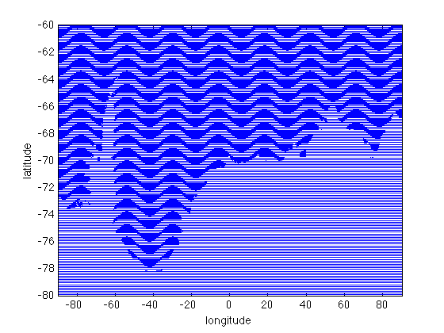
For a little extra context, add a grounding line. Here I'm using antbounds_data from the Antarctic boundaries plugin to get Mouginot et al.'s coast line:
[gllat,gllon] = antbounds_data('coast'); hold on plot(gllon,gllat,'k')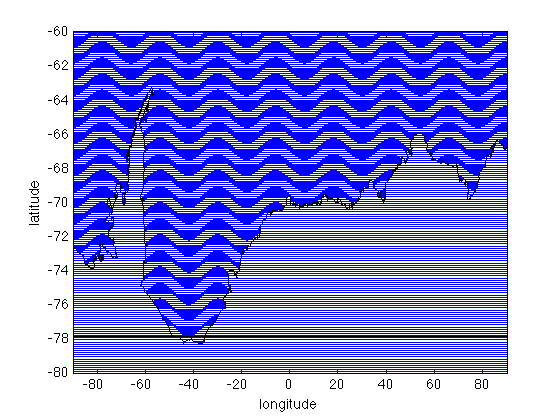
The plot above displays a wind vector for each of the 161x1441 (nearly a quarter million!) grid cells in lat, lon, U, and V. So they're hard to see unless you zoom in. Here's what it looks like if you zoom in to the Antarctic Peninsula:
axis([-65.5 -56.5 -66 -63])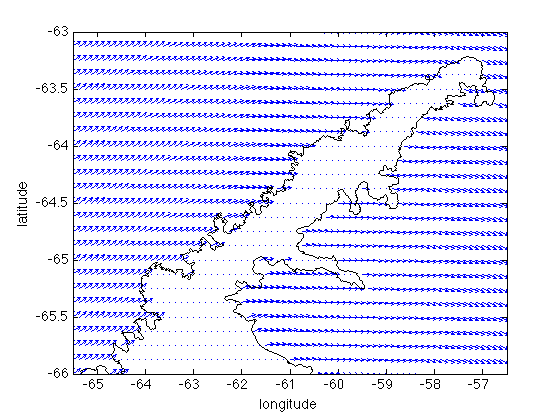
Downsample the grid
In most cases, a quarter million wind vectors are too many to be displayed meaningfully, and you'll probably want to downsample the grid. A quick and dirty way to downsample a grid is to just plot every Nth point along each row and column. For example, you could downsample to every 10th point like this:
lat(1:10:end,1:10:end)
and you would do the same for lon, U, and V. But be aware that simply taking every Nth point introduces the possibility of aliasing. An easier way to do it that also applies anti-aliasing is to use the Image Processing Toolbox function called imresize. Now let's delete the quiver arrows we plotted above and re-plot the wind vectors downsampled by a factor of 10:
% Delete the quiver plot from above: delete(q) % Re-plot a downsampled quiver plot: q = quiver(imresize(lon,1/10),imresize(lat,1/10),imresize(U,1/10),imresize(V,1/10)); axis([-90 90 -80 -60])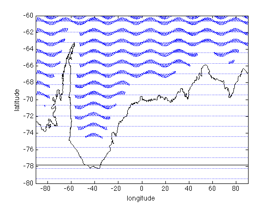
Hmmm... That's still not a very pretty display. And you'll notice everything close to the continent got set to NaN because the imresize function performs bicubic interpolation, so everything close to the coast that had at least one neigboring NaN grid cell also became NaN after interpolation. Let's explore other ways of plotting the data...
Plot in polar stereographic projection
Before plotting wind vectors, let's set up a little context. I'm using pcolorps to plot wind speed, then Mouginot et al.'s grounding line and coast line:
figure % Plot wind speed as pcolor: pcolorps(lat,lon,hypot(U,V)) axis tight % Add a grounding line and coast line antbounds('gl','k') antbounds('coast','k') % Add a graticule (grid) graticuleps(-85:5:-45,-90:30:90) % Put a frame around the map: box on % Remove numbers from x and y axes: set(gca,'xtick',[],'ytick',[]) % Make note of the axis limits for later use: ax = axis;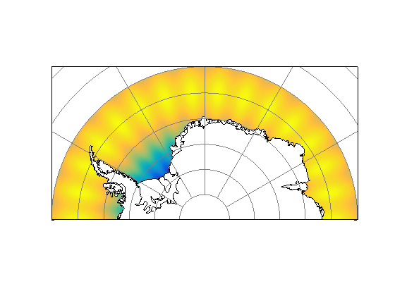
Transform yourself
Antarctic Mapping Tools has a function specifically designed to transform zonal (eastward) and meridional (northward) vector components into the x and y components on a polar stereographic map. It's called uv2vxvy. You can use uv2vxvy along with ll2ps to perform the coordinate transformations yourself, then plot with Matlab's standard quiver function:
% Transform the grid coordinates: [x,y] = ll2ps(lat,lon); % Transform the vector components: [vx,vy] = uv2vxvy(lat,lon,U,V); hold on q = quiver(x,y,vx,vy);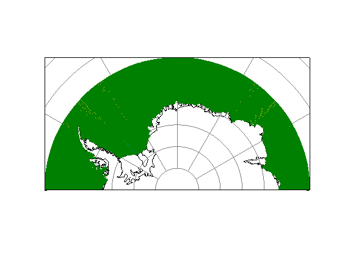
And again, the vector field is too dense to see at this scale, but individual vectors become visible if you zoom in:
mapzoomps('palmer station','mapwidth',200)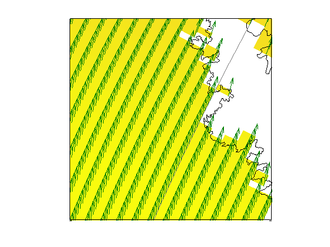
Still, the vector field is too dense to be of much use. We can try to resize it with imresize the same way we did for unprojected coordinates above:
% Delete the vector field delete(q) % Plot a downsampled vector field: q = quiver(imresize(x,1/10),imresize(y,1/10),imresize(vx,1/10),imresize(vy,1/10)); % Restore original axis limits: axis(ax)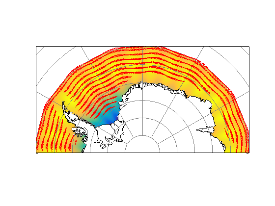
Again, we run into the same problems we ran into with the unprojected coordinates--the vectors are too dense in longitude and there are edge effects around the coast where interpolation has been confused by neighboring NaNs.
Plot with quiverps
This documentation file is all about quiverps, so let's plot with quiverps already! Here's how it looks with default settings:
% Delete the old quiver plot: delete(q) % Make a new quiverps plot: q = quiverps(lat,lon,U,V);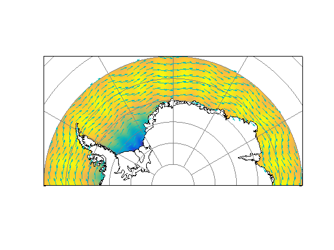
Set quiverps arrow density
Too many arrows? Not enough arrows? By default, quiverps plots enough arrows such that about 45 arrows will be displayed across the diagonal of the polar stereographic map window. If you want more arrows or fewer arrows, simply set the 'scale' property to a value more or less than 45. Here we reduce the number of arrows by setting the scale to 30:
delete(q)
q = quiverps(lat,lon,U,V,'scale',30);
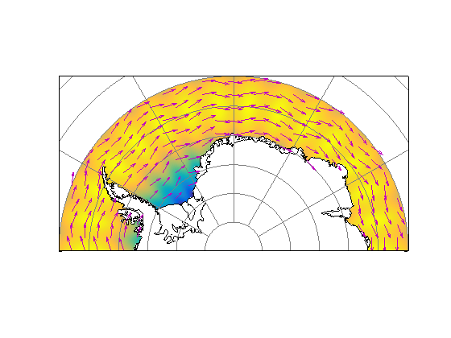 Set quiverps display properties
Formatting quiverps arrows is just as easy as formatting quiver arrows. Just specify any quiver properties as property name-value pairs. Here we plot fat red quiverps arrows:
delete(q) q = quiverps(lat,lon,U,V,'color','red','linewidth',2);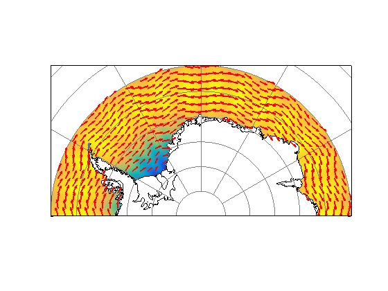
Zooming to a small region
The quiverps function is written to optimize vector display for the extents of the current map window. So if your vector dataset extends beyond your region of interest, it is best to zoom to your region of interest before calling quiverps. Here's what it looks like if you zoom after calling quiverps:
mapzoomps('palmer station','mapwidth',200)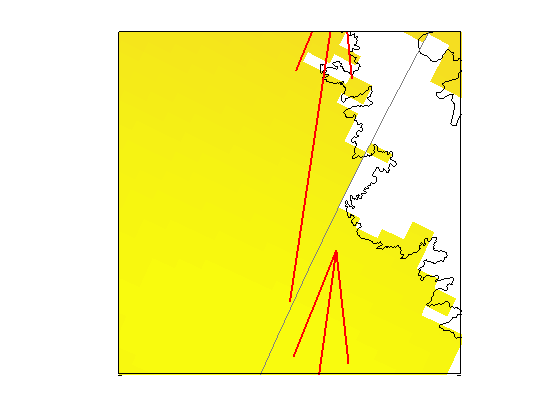
Well that's no good. But if we call quiverps again, it'll fill in the map window with arrows:
delete(q) q = quiverps(lat,lon,U,V,'color','red','scale',30);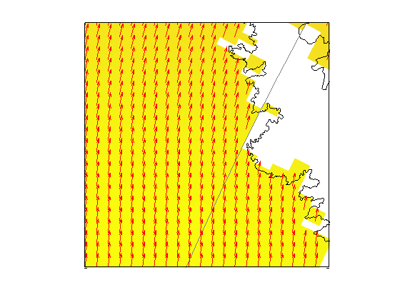
Fix boundaries near NaN holes
If you're missing vectors near a coast line or some other NaN hole in your dataset, quiverps has an option to help. By setting 'inpaintnans' to true, quiverps uses John D'Errico's inpaint_nans function to fill in any missing values before interpolating to a regular polar stereographic grid. After interpolation and before plotting, any location that was originally NaN is set back to NaN. That might sound silly and pointless, but the difference is in the edges near NaN boundaries.
delete(q) q = quiverps(lat,lon,U,V,'color','red','scale',30,'inpaintnans',true);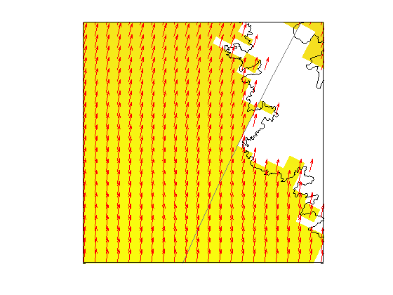
Citing AMT
If this function or any other part of Antarctic Mapping Tools is useful for you, please cite the paper that describes AMT.
Greene, C. A., Gwyther, D. E., & Blankenship, D. D. Antarctic Mapping Tools for Matlab. Computers & Geosciences. 104 (2017) pp.151-157. doi:10.1016/j.cageo.2016.08.003.
Author Info
The quiverps function and supporting documentation were written by Chad A. Greene of the University of Texas at Austin's Institute for Geophysics (UTIG), May 2017.